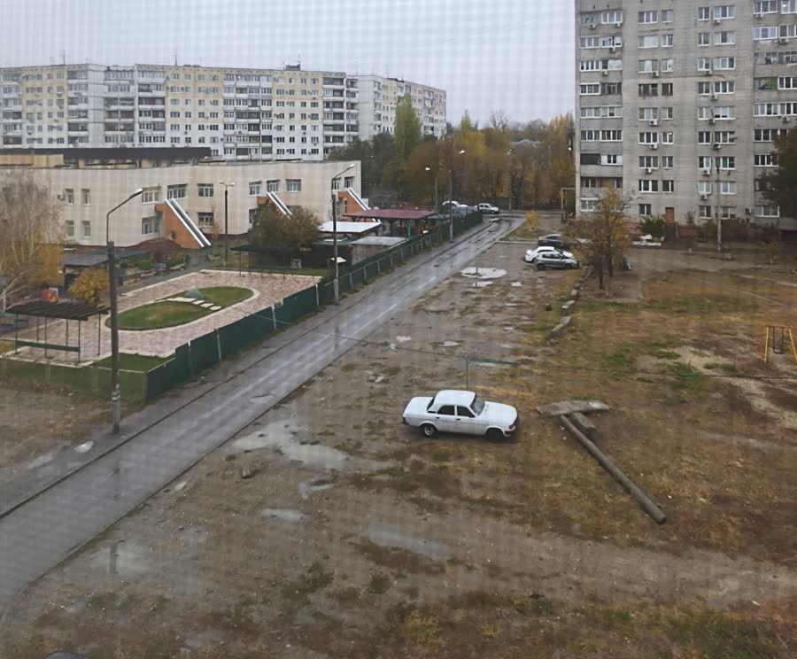
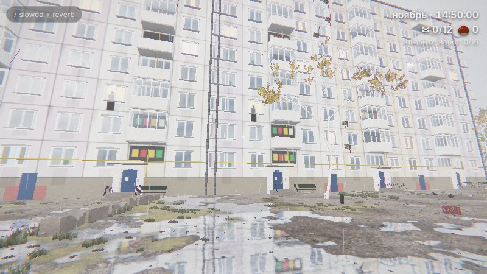
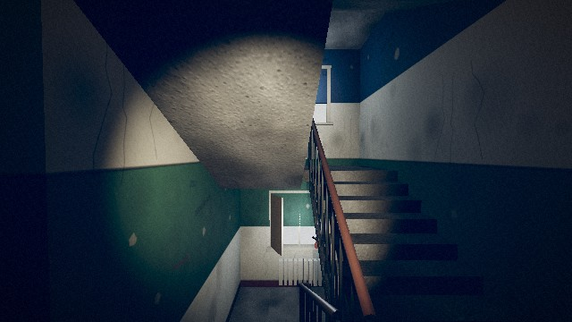
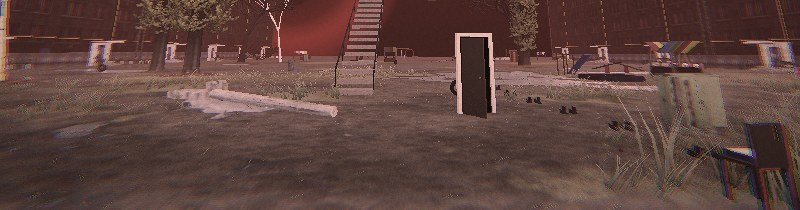
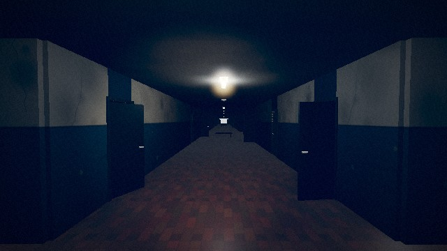
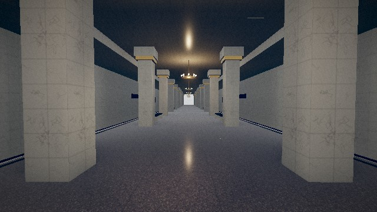
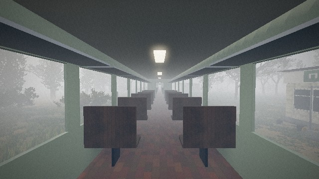
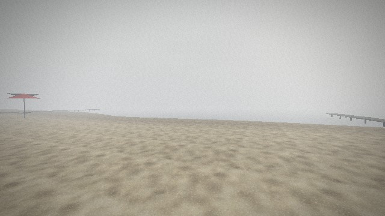
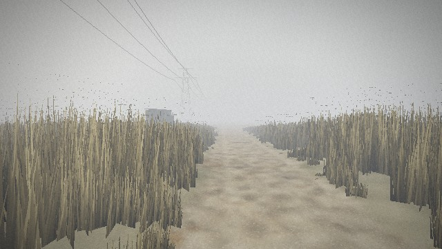
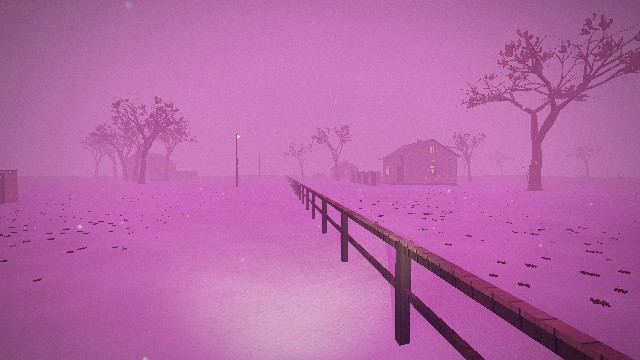

Атмосферная игра-сон от первого лица про двор, который ты помнишь. Волгоград, 415-й микрорайон, посёлок ГЭС. Ни монстров, ни скримеров — жутко от пустоты, а не от страшилок.
Ты вернулся из школы. Ключа нет, домофон молчит, во дворе мокрая грязь, голуби и пятиэтажки с кондиционерами на фасаде. Всё как на фото из окна — только время остановилось: часы всегда показывают 14:50, а минута никак не сменится.
Ходи по мирам-воспоминаниям: двор, подъезд, школа, метро, пляж, электричка. Собирай записки и ключи от ворот. Когда соберёшь все — откроются бабушкины ворота, и можно будет вернуться домой, в квартиру 47, и лечь спать.

Весь упор на реализм — в Дворах и Подъезде. Остальные миры спрятаны в меню под карточкой «Ещё миры».

Двор дома на улице Героев Тулы, 13. Светлая грязь, лужи-зеркала, тополя и берёзы, стаи голубей, ржавые машины и бесконечные кварталы вокруг.

Новогодняя ночь. Лестничная площадка, которая уходит вверх и вниз без конца. Лифт без кнопок: этаж вводишь сам — хоть до переполнения int32.

Тот же двор, но красный. Безликие силуэты, застывшие голуби, часы идут назад. Вход — через чёрный шар, который почему-то лежит в обычных Дворах.

03Школа
04Метро
05Электричка
06Пляж
07Поле
08ЗимаИгра собрана на Three.js и написана для телефона: открывается в браузере или упаковывается в Android-приложение.
Пасмурный свет, туман, мягкая виньетка и «ручная» камера. Небо — настоящее HDRI, поверхности — PBR-текстуры.
Дома вокруг спавна стоят по настоящим координатам. Остальной мир генерируется бесконечно, но всегда одинаково для одного сида.
Голуби взлетают, когда подходишь. Бабушки на лавочках, коты, воронье на проводах, лай собак и далёкий поезд.
Гул города, капли с крыш, чавканье грязи под ногами, хлопки подъездных дверей — всё синтезируется на лету.
Вместо кнопок — поле ввода. Попробуй 13, 404, 666 или число побольше. Или самое большое из возможных.
Автоматический режим для больших экранов, управление пальцем и режим «Авто» для слабых устройств.
Осмотрись, пройди к подъездам. Двадцать процентов дверей открыты и ведут в другие миры.
Двенадцать записок во Дворах складываются в историю. Каштаны — просто для души.
В каждом мире спрятан золотой ключ от ворот. Он светится и крутится.
Открой ворота, вернись во двор, поднимись в кв. 47. Минута пойдёт дальше.
Весь код игры, документация по каждому миру и план порта на Roblox лежат в репозитории.
https://github.com/nlponae269/volga-issledovatell
Музыка в репозиторий не входит — она чужая и используется только в личных сборках. Ассеты из папки res/ — CC0 (Poly Haven).